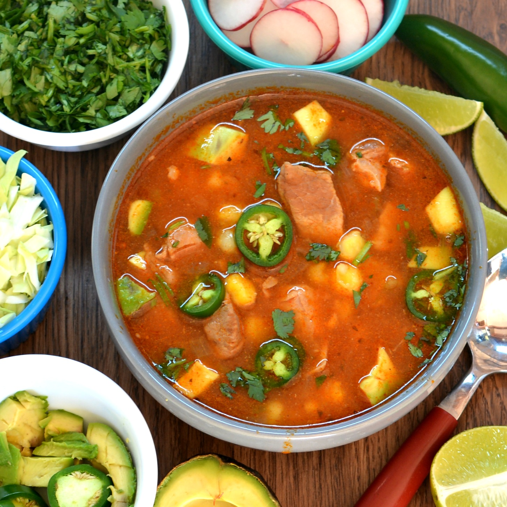

Red Posole

Description
A earthly satisfying Instant Pot recipe. Pork, hominy, spices and herbs, a classic stable in Mexico. Serve in bowls and add avocado, onions, radishes, cabbage and radishes to your taste.
Ingredients
2 pounds pork shoulder, cut into 1-inch cubes
1 teaspoon New Mexico chili powder
1 teaspoon freshly ground black pepper
½ teaspoon chipotle chile powder
4 cups low-sodium chicken broth
1 (14.5 ounce) can red enchilada sauce
1 (4 ounce) can diced green chiles
1 (15 ounce) can golden hominy, drained
Steps